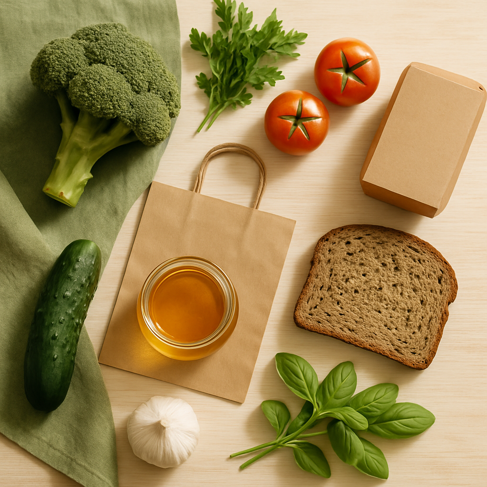

<div class="container">
    <div class="container-benefits">
        
        <div class="container-bf-title">
            <h2 class="benefits-title">Why Choose Organic?</h2>
            <p class="benefits-description">
                Organic products offer a healthier choice for you and your family. With no synthetic pesticides or GMOs,
                you can enjoy better nutrition and natural flavors while supporting sustainable farming practices.
            </p>
            <ul class="benefits-list">
                <li class="benefits-item">
                    <svg width="48" height="48">
                        <use href="/public/icon.svg#starlet"></use>
                    </svg>
                    <h3 class="benefits-heading">Better for Your Health</h3>
                    <p class="benefits-text">
                        Organic foods are grown without synthetic chemicals, making them safer for your body. They're
                        rich in antioxidants and
                        nutrients that support your immune system and long-term well-being.
                    </p>
                </li>
                <li class="benefits-item">
                    <svg width="48" height="48">
                        <use href="/public/icon.svg#ball"></use>
                    </svg>
                    <h3 class="benefits-heading">Protecting the Planet</h3>
                    <p class="benefits-text">
                        Organic farming reduces pollution, conserves water, and improves soil health. By choosing
                        organic, you're helping build
                        a cleaner, more sustainable environment for future generations.
                    </p>
                </li>
                <li class="benefits-item">
                    <svg width="48" height="48">
                        <use href="/public/icon.svg#cutlery"></use>
                    </svg>
                    <h3 class="benefits-heading">Fruits & Vegetables</h3>
                    <p class="benefits-text">Freshly picked organic produce delivered straight from local farms to your
                        table.</p>
                </li>
                <li class="benefits-item">
                    <svg width="48" height="48">
                        <use href="/public/icon.svg#cheese"></use>
                    </svg>
                    <h3 class="benefits-heading">Dairy Products</h3>
                    <p class="benefits-text">Creamy, organic dairy options that are both delicious and ethically
                        sourced.</p>
                </li>
            </ul>
        </div>
    </div>
</div>